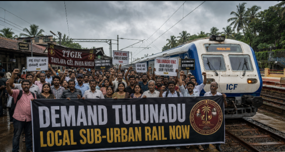

A silent economic crisis is unfolding across the landscape of Tulunadu. Over the past month, a sudden, crushing transit price hike on the 58-to-60-kilometer corridor between Udupi and Mangaluru has seen express bus fares surge by ₹100. This sharp escalation has triggered widespread public fury among working professionals, low-income daily wage earners, and university students who now find themselves economically cornered by a predatory private highway monopoly.
In response, an aggressive, grassroots public movement is rapidly consolidating across Dakshina Kannada and Udupi districts. The singular, unified demand of the public is clear: the immediate intervention of the Ministry of Railways to establish a dedicated, low-cost Udupi–Mangaluru–Puttur Local Sub-Urban Rail Network for Tulunadu.
The transport corridor connecting Udupi, Mangaluru, and Puttur represents one of the densest economic and educational arteries in the coastal belt. Every morning, tens of thousands of citizens commute across this stretch. Students rely on it to reach world-class educational hubs, patients travel to major medical academies, and professionals commute to corporate offices.
For a daily commuter, a ₹100 increase per single trip translates directly to an additional ₹4,000 to ₹5,000 i

Ground Report: Taxpayers and TGIK activists unite at the platform demanding immediate scheduling overhauls.
The true tragedy of this economic exploitation is that a robust, multi-crore railway infrastructure already exists right alongside the highway. The tracks are laid, the stations are built, and the line is fully electrified. Yet, current train timetables seem deliberately designed to be useless for local taxpayers.
A review of the current daily schedules under the Konkan Railway Corporation Limited (KRCL) and Southern Railway highlights a stark systemic failure:
"We are cleaning the tracks and handling the heavy maintenance workload for long-distance trains bound for Mumbai, Kerala, and Delhi, but our own local taxpayers cannot get a basic, low-cost morning commuter train to get to college or work," stated a prominent regional railway activist on a Tulunadu community forum.
Regional passenger welfare associations, including the Paschima Karavali Railway Yatri Abhivriddhi Samiti, argue that a suburban rail network could transport commuters for a fraction of current bus fares. A single MEMU (Mainline Electric Multiple Unit) ticket for 60 km would cost merely ₹15 to ₹30, completely undercutting the exorbitant bus fares now being charged on the highway.
Activists have laid out a three-pronged structural blueprint to resolve this crisis:
A major administrative roadblock is the operational handover point at Thokur, where jurisdiction switches from Konkan Railway (KRCL) to the Palakkad Division of Southern Railway. Public memorandums demand that both railway zones establish a unified regional scheduling desk to ensure local commuter trains are never delayed or sidelined in favor of national long-distance trains.
Because the Konkan line is primarily a single-track network, local trains are frequently delayed to allow oncoming express trains to pass. Completing the long-delayed track doubling across the region and upgrading to automatic block signaling is essential to increase local train frequency safely.
The public outcry over the bus fare hike has rapidly evolved into a political litmus test for local elected representatives. Citizen groups, student unions, and trade associations are actively organizing to lobby Dakshina Kannada MP Captain Brijesh Chowta and the Udupi-Chikmagalur parliamentary delegation.
The immediate objective of the campaign is to force a joint, bipartisan presentation directly to Union Railway Minister Ashwini Vaishnaw. The petition will demand the immediate sanction of a Tulunadu Sub-Urban Rail Network, structured similarly to successful suburban networks operating in Bengaluru and Mumbai.
For a region that serves as the economic powerhouse of the state's coast, an affordable, safe, and efficient local train loop is no longer a luxury. It is an absolute economic necessity to dismantle a predatory transport monopoly and give the youth of Tulunadu the affordable mobility they deserve.